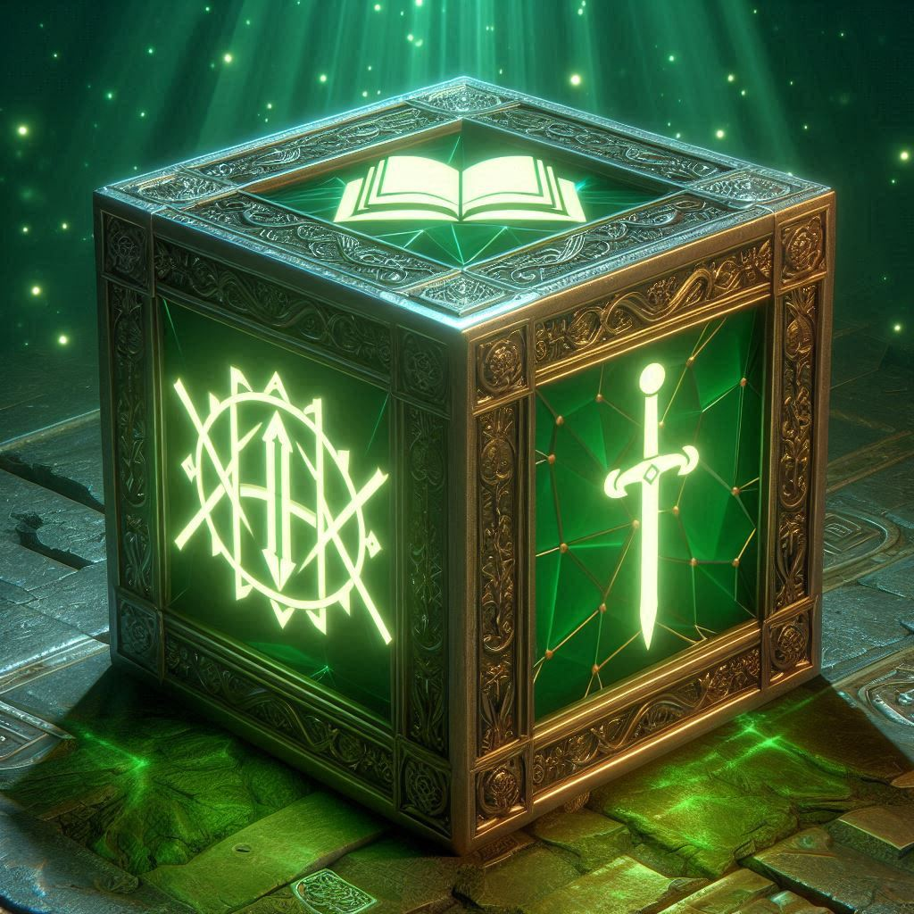

A nagy döntés
Brr Brr Patapim eléjük helyezett egy mágikus kockát, amelyen két szimbólum ragyogott: egy könyv és egy kard. Mély hangon így szólt:
- „Két út áll előttetek: válasszátok a bölcsesség útját, és oldjátok meg a rejtvényt, vagy válasszátok a bátorság próbáját, és szálljatok szembe az erdő őrzőjével!”

Kard
Könyv